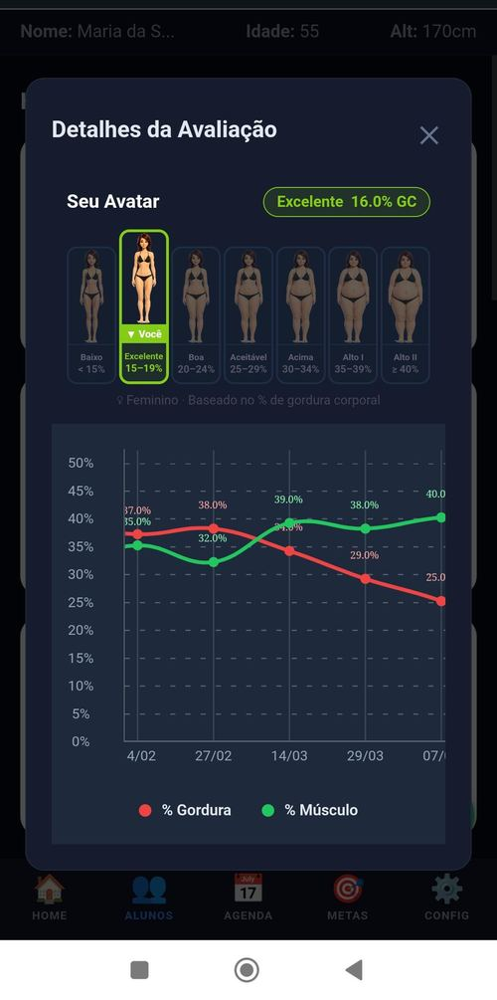

Por dentro do app
Cada detalhe, documentado.


Telas reais do aplicativo Vortex Primus
Porque ele não consegue enxergar a própria evolução — e o que não se vê, não se valoriza.
Em segundos, seu aluno vê exatamente o que você já sabe: que o treino está funcionando. Avatar 3D, gráfico de evolução e composição corporal — tudo em uma tela.

Se ele não vê isso,
ele não valoriza o seu trabalho.
Telas reais do aplicativo Vortex Primus